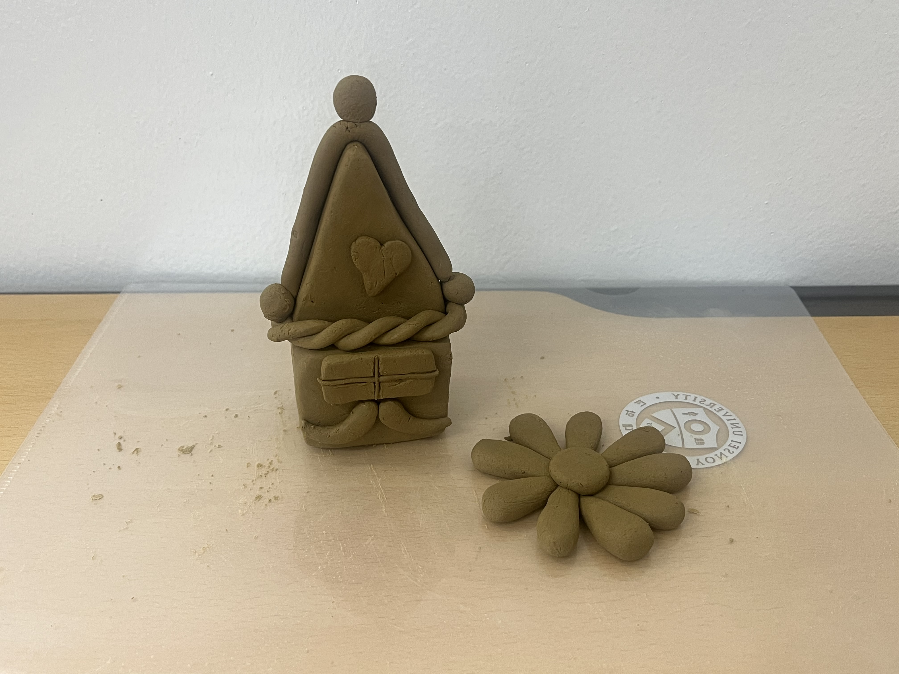
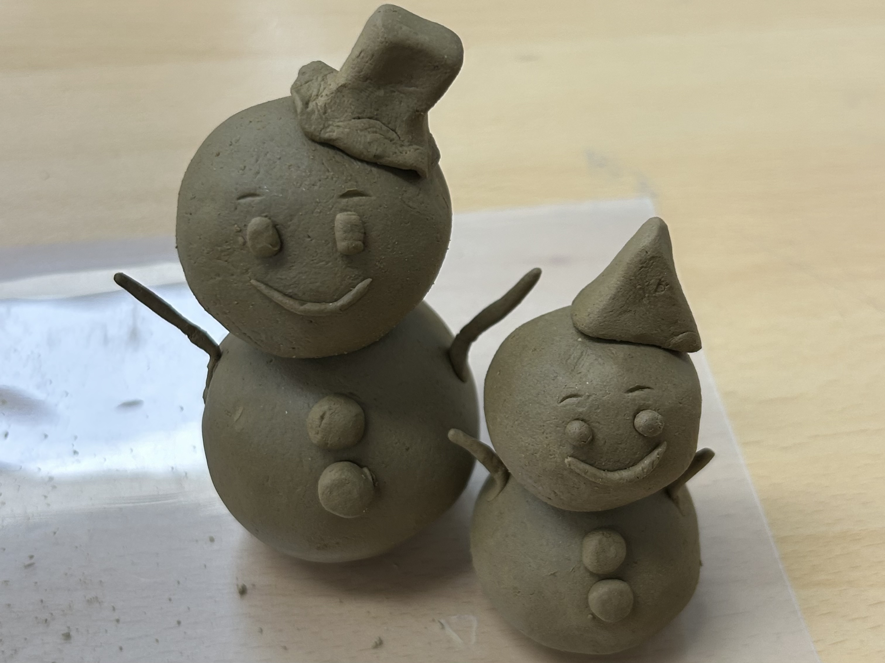
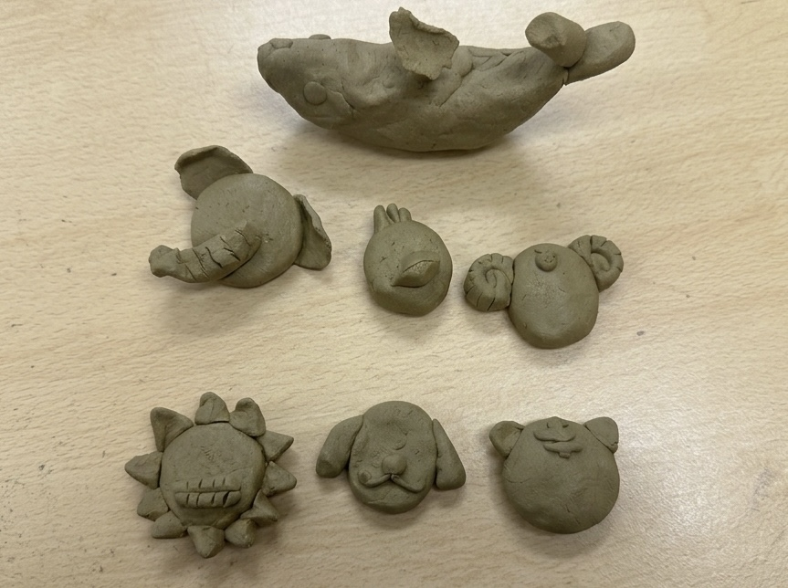
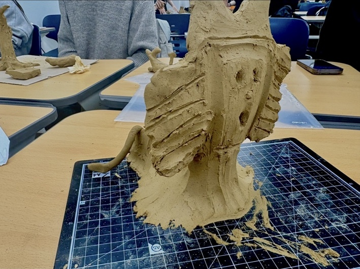
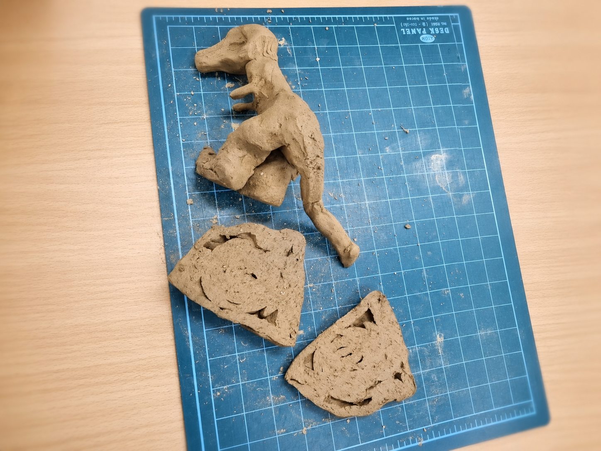

저는 이번에 겨울 분위기가 느껴지는 작은 과자집과 꽃을 만들었습니다.
집은 전체적으로 동화 속에 나올 것 같은 과자집 느낌으로 표현하고 싶었습니다. 지붕은 길게 내려오는 형태로 만들어 포근한 분위기를 살리고, 가운데에는 하트 장식을 붙여 따뜻한 집의 이미지를 나타내고자 하였습니다.
또한 집의 아래쪽에는 특이한 문과 창문을 표현하고, 점토를 꼬아 만든 장식을 둘러 집이 조금 더 아기자기하게 보이도록 하였습니다.
옆에 놓인 꽃은 집과 함께 어울리는 주변 장식으로 만들었는데 집 앞을 꾸며주는 상징적인 존재로 생각하며 제작하였습니다. 전체적으로 제가 떠올린 따뜻하고 귀여운 분위기를 점토로 표현하는 데 집중하였습니다.
말랑말랑 나만의 집
안정현, 2026
과자로 만든 집일까요, 점토로 만든 집일까요~?
노란색 물감을 주웠더니, 달콤한 향기가 날 것 같은 과자집과 커다란 꽃이 나타났어요!
물감으로 꽃을 그려서 선물하면 친구가 활짝 웃어줄까요? 어쩌면 찰흙으로 만들어서 건네주는 것도 좋을 것 같아요!

저는 눈사람을 만들었어요.
처음에는 무엇을 만들지 정하지 않는 상태로 시작했는데, 점토를 짓이기어 동근 형태를 만들다가 어렸을 때 동생과 같이 눈사람을 만든 기억이 생각나서 눈사람을 만들어봤어요. 모자나 단추도 만들어서 꾸몄어요. 비슷한 눈사람을 두 개 만들어서 당시 동생과 같이 만든 기억을 표현해 봤어요.
눈사람
사호, 2026
어렸을 때 많이 만들었어요
아참,
꽃은 금방 시들지도 몰라요.
저기 다정하게 웃고 있는 눈사람 남매에게 어떤 선물이 좋을지 한 번 물어볼까요?

처음에는 어떤 모양을 만들려고 하지 않았어요. 그냥 점토를 만지는게 너무 재밌어서 동그라미도 만들어보고 네모도 만들어봤어요.
그러다가 어릴적에 엄마와 클레이로 병아리 모양을 만들던게 생각나서 동물을 만들고 싶어졌어요. 그래서 처음에는 양을 만들어 봤어요. 그런데 점토가 흙 색이라서 눈을 붙여줘도 눈 같지 않았어요. 그래서 눈이 없지만 동물들의 자기만 가지고 있는 특별한 특징을 보여줘서 어떤 동물인지 알 수 있게 해주고 싶었어요. 양은 뿔을, 닭은 벼슬과 부리를, 코끼리는 코와 귀를, 사자는 갈기 털과 이빨을 붙여서 만들었어요. 어떤 동물인지 알아볼 수 있게 만들었어요. 그리고 강아지, 호랑이, 고래도 만들었어요. 점토를 만지는 재밌는 시간이었어요.
동물친구들
신하선, 2026
가장 좋아하는 동물은 양이에요.
눈사람 남매가 숲속 동물 친구들을 모두 불러 한자리에 모아주었어요!
덩치 큰 고래부터 늠름한 사자, 귀여운 강아지까지도 있네요! 친구는 어떤 동물을 가장 마음에 들어 할까요?

이 작품은 점토를 이용해 상상 속 동물인 스핑크스를 만든 입체 활동이에요.
스핑크스가 강하고 무섭게 보이도록 전체 모습을 크고 튼튼하게 만들고자 했어요 특히 목 부분이 쓰러지지 않도록 점토를 여러 번 붙여 단단하게 만들었고, 양옆에는 선을 긁어 거칠고 자세한 느낌이 나도록 표현했어요. 또 무섭고 긴장되는 분위기를 나타내기 위해 입을 크게 벌리고 눈과 얼굴 모양을 강조했어요. 점토를 손으로 직접 만지며 만드는 과정에서 입체 모양의 균형을 맞추는 것이 중요하다는 점을 느낄 수 있었고, 얼굴 표정과 질감에 따라 작품의 느낌이 달라질 수 있다는 점도 알게 되었어요. 또 상상 속 존재를 자유롭게 표현하며 창의력과 만들기 능력을 키울 수 있었던 활동이었어요
스핑크스의 비밀
신채민, 2026
아침에는 발이 4개, 점심에는 발이 2개,
저녁에는 발이 3개가 되는건 무엇일까요?
동물 친구들을 따라가다 보니 커다랗고 신비로운 스핑크스를 만났어요!
입을 크게 벌린 모습이 조금 무섭지만, 혹시 뒤에 아주 특별한 선물을 숨기고 있는 건 아닐까요?

처음에는 공룡을 열심히 만들어서 멋지게 세워두었어요. 그런데 머리 쪽이 무거웠는지 공룡이 그만 넘어져 버렸어요. 쓰러진 공룡을 가만히 보고 있으니, 아주 먼 옛날 우주에서 커다란 돌덩이가 떨어져서 공룡들이 사라졌던 이야기가 떠올랐어요. 그러고 나니, 이번에는 찰흙으로 화석을 만들어보고 싶어졌어요. 그래서 만든 것이 바로 공룡 옆에 있는 동그란 '암모나이트' 화석이에요. 이 화석은 만드는 방법이 아주 특별해요. 먼저 암모나이트 모양을 빚은 다음, 그 위를 다른 찰흙으로 둥글게 감싸주었어요. 그리고 얇은 줄을 이용해서 찰흙을 반으로 잘라낸 거랍니다. 처음 생각했던 모양과 똑같이 나오지는 않았지만, 정말 땅속에서 찾아낸 화석 같지 않나요?
공룡 시대
김지호, 2026
저는 6살 때 고고학자가 되고 싶었답니다
용기를 내어 스핑크스를 지나가 보니, 스핑크스가 오랫동안 지키고 있던 귀한 보물이 나타났어요!
땅속 깊은 곳에서 찾아낸 멋진 공룡 화석은, 세상에 하나밖에 없는 아주 특별한 선물이 될 거예요.